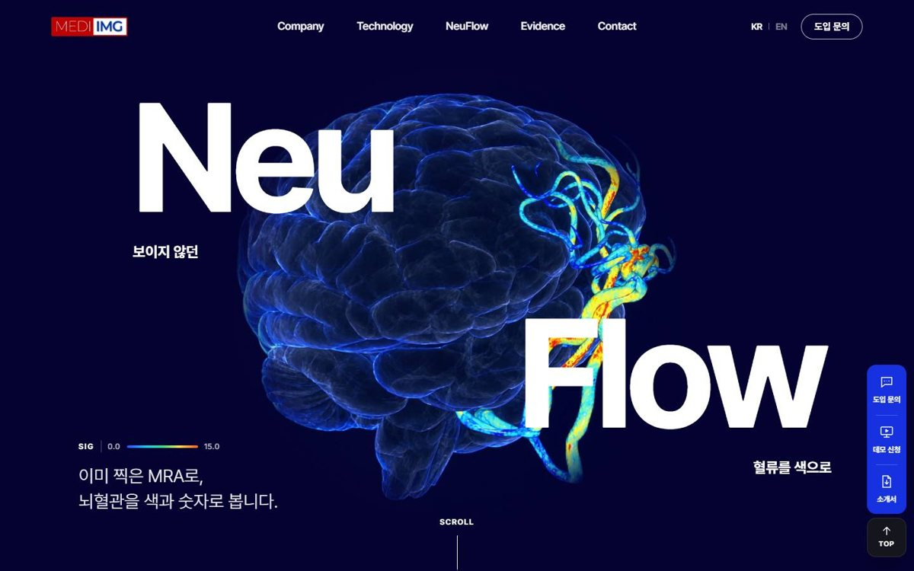
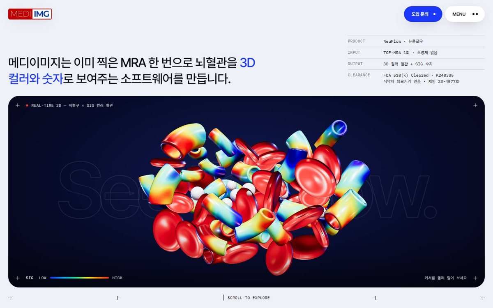
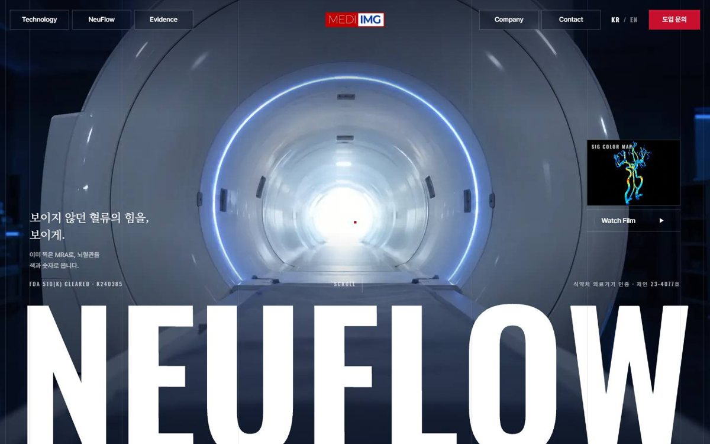
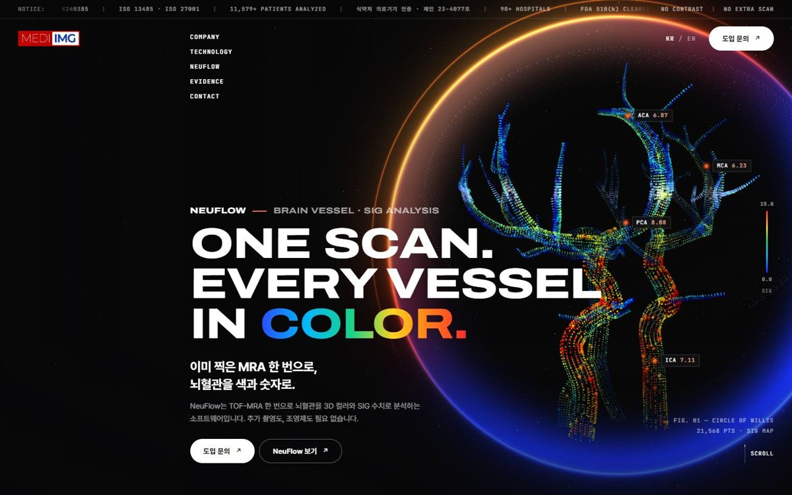
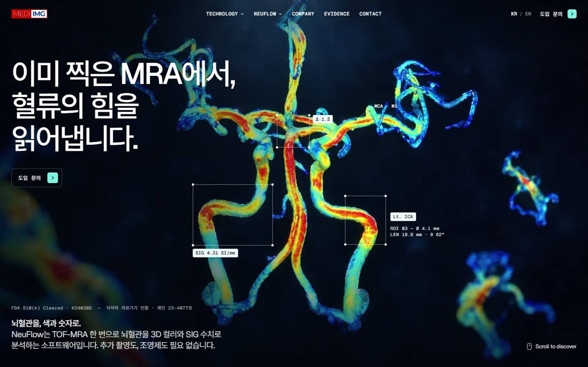
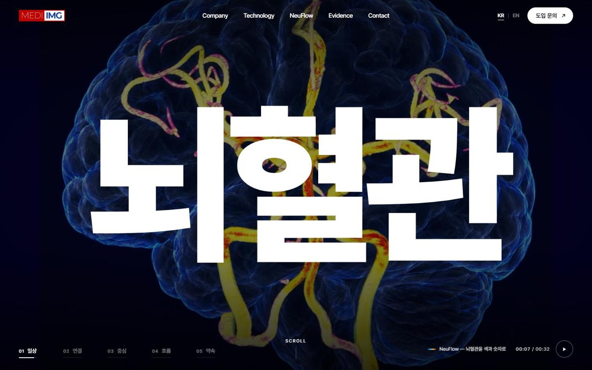

DEMO 01
국내 의료기업형
레퍼런스 · brainall.kr남색 화면에서 "Neu / Flow" 두 단어가 갈라지고, 3D 뇌 영상 뒤로 소개 문장이 한 단어씩 켜집니다.
GSAP 고정 스크롤3D 영상탭 캐러셀

DEMO 02
실시간 3D 스튜디오형
레퍼런스 · lusion.co커서에 밀려나는 적혈구, 스크롤에 따라 자라나고 색이 입혀지는 혈관, 혈관 내부를 통과하는 터널.
three.js 실시간물리 인터랙션터널

DEMO 03
다큐멘터리 잡지형
레퍼런스 · white-desert.com스크롤하면 MRI 보어 안으로 들어가 흰 화면으로 이어집니다. 초대형 제목과 세리프, 넓은 여백.
영상 프레임 스크롤마스크 전환가로 흐름

DEMO 04
여정형
레퍼런스 · unitedcarriers.comMRI 촬영에서 컬러 혈관, 보고서까지를 하나의 긴 스크롤 여정으로. 스크롤 속도에 반응하는 SIG 게이지.
이미지 시퀀스three.js 점 구름FAQ

DEMO 05
계측 대시보드형
레퍼런스 · alethia.earth어둠 속에 떠 있는 혈관으로 카메라가 다가가고, 그 위에 수치 주석과 데이터 카드가 얹힙니다.
시퀀스 + 주석 UI데이터 카드전후 비교

DEMO 06
브랜드 필름형
레퍼런스 · gigavis.com32초 브랜드 필름이 히어로. 영상은 글자 없이 만들고 한글 타이포는 웹에서 실시간 모션으로 얹어, KR/EN이 즉시 바뀝니다.
키네틱 타이포자모 조합 타이핑원형 와이프